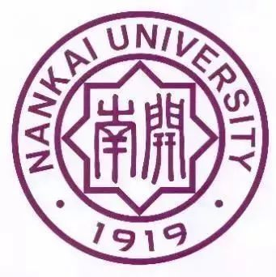

Mobisys研究组的致力于研究移动计算领域的系统、应用、软件开发等过程中出现的科学问题和工程实践问题。研究工作的特点是面向实际问题，从具体问题的分析出发，综合运用系统、应用、算法、仿真等开发手段，开展产学研结合的教学科研工作。主要研究的问题包括智能移动设备系统设计优化、移动计算能耗分析、软硬件协同设计、物联网技术、移动大数据分析等。
Mobisys研究组依托于嵌入式系统与信息安全实验室，同时与天津三星电子有限公司共建“智慧生活联合实验室”。目前实验室成员 包括教授2人，副教授2人，讲师1人，现有博士生1人，硕士生20余人。
如果您对本组的工作感兴趣，可以在本网站上找到研究组中成员,课程, 项目, 已发表论文, 相关资源等信息.